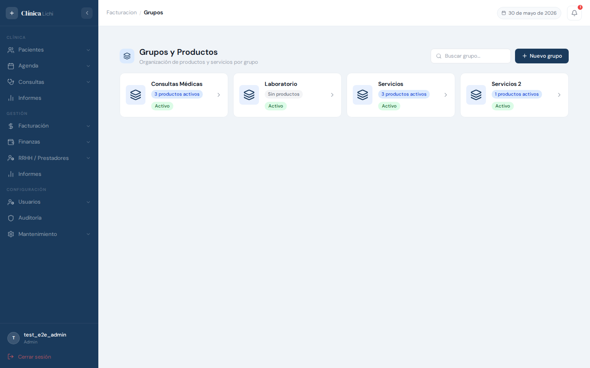
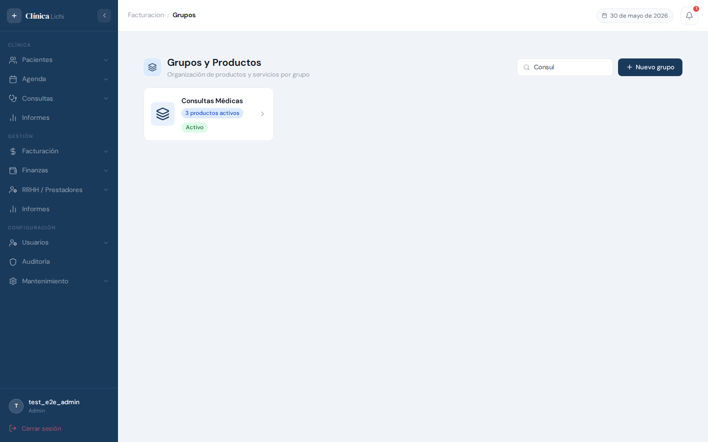
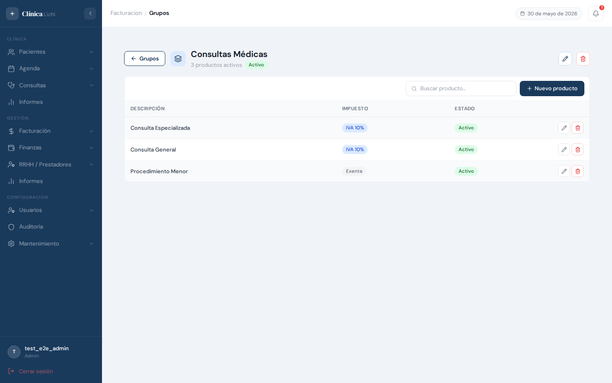
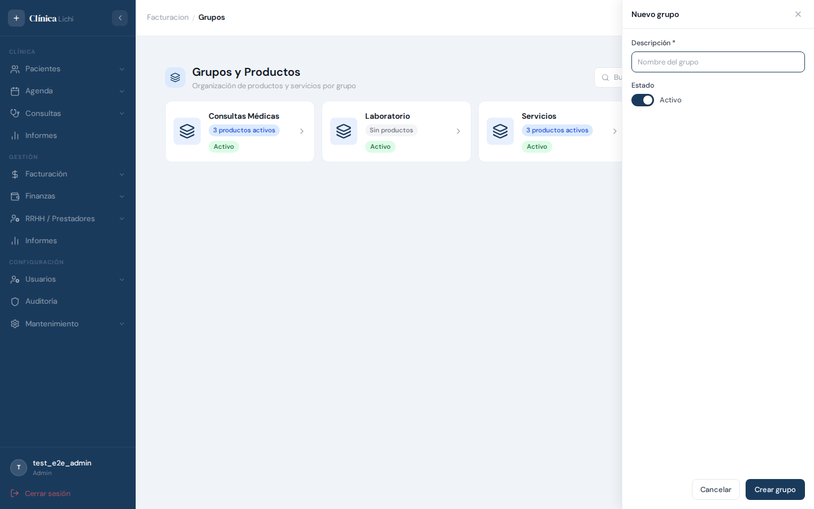
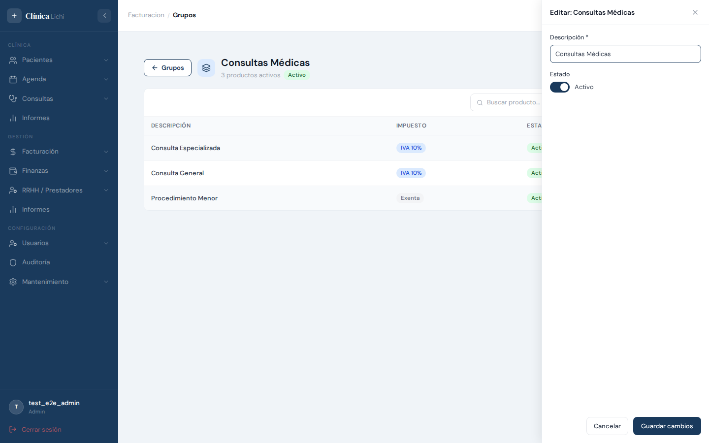
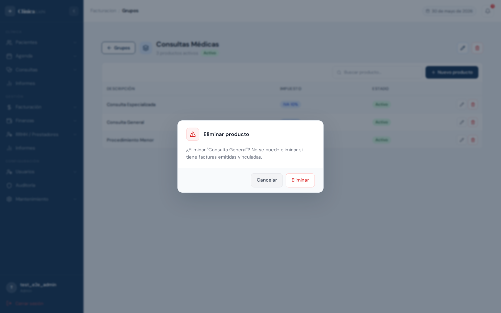
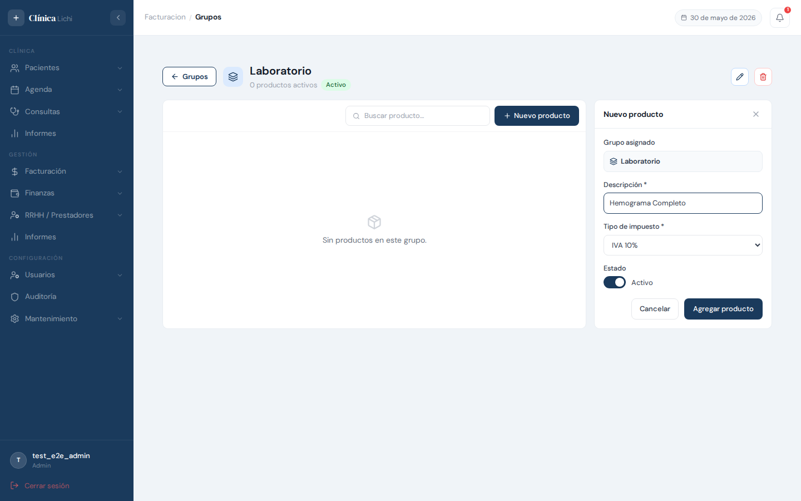

Descripción del módulo
El módulo Grupos y Productos permite organizar los servicios y productos que la clínica ofrece en categorías llamadas grupos. Cada grupo contiene uno o varios productos o servicios con su tipo de impuesto asociado.
Esta estructura es la base del módulo de Facturación: al emitir una factura, los ítems se seleccionan desde este catálogo. Mantenerlo actualizado y organizado facilita la facturación y los reportes.
ej: Consultas
ej: Consulta General
ítem de factura
Permisos por rol
| Acción | Administrador | Recepcionista | Médico | Secretaria médico |
|---|---|---|---|---|
| Ver listado de grupos | ✅ | ✅ | ✅ | ✅ |
| Ver productos de un grupo | ✅ | ✅ | ✅ | ✅ |
| Crear grupo | ✅ | ✅ | — | — |
| Editar grupo | ✅ | ✅ | — | — |
| Eliminar grupo | ✅ | — | — | — |
| Crear producto | ✅ | ✅ | — | — |
| Editar producto | ✅ | ✅ | — | — |
| Eliminar producto | ✅ | — | — | — |
Acceder al módulo
El módulo se encuentra en el menú lateral bajo el grupo Facturación.
- Iniciá sesión con tu usuario y contraseña.
- En el menú lateral izquierdo, hacé clic en Facturación para expandir el grupo.
- Seleccioná Grupos y Productos.
- La pantalla principal carga con las tarjetas de todos los grupos registrados.
Pantalla principal — grupos

La pantalla principal muestra los grupos como una grilla de tarjetas. Cada tarjeta contiene:
| Elemento | Descripción |
|---|---|
| Nombre del grupo | Descripción del grupo en texto destacado. |
| Cantidad de productos | Badge con el número de productos activos vinculados. Si no tiene productos, muestra "Sin productos". |
| Estado | Activo o Inactivo según el estado del grupo. |
| Flecha → | Indica que al hacer clic en la tarjeta se navega a los productos del grupo. |
Buscar grupos

El campo de búsqueda en la esquina superior derecha filtra las tarjetas por el nombre del grupo. La búsqueda aplica con un breve retardo automático; no es necesario presionar Enter.
Ver productos de un grupo

Al hacer clic en cualquier tarjeta de grupo, la pantalla cambia a la vista de productos de ese grupo. En el encabezado aparece el nombre del grupo, la cantidad de productos activos y su estado.
Tabla de productos
Cada fila de la tabla contiene:
| Columna | Descripción |
|---|---|
| Descripción | Nombre del producto o servicio. |
| Impuesto | IVA 10% IVA 5% Exenta |
| Estado | Activo o Inactivo |
| Acciones | Botón lápiz (editar) y botón basura (eliminar — solo admin). Las filas inactivas aparecen con menor opacidad. |
Volver a la lista de grupos
Hacé clic en el botón ← Grupos en la esquina superior izquierda para regresar a la vista de tarjetas sin perder ningún cambio.
Crear un grupo

- Hacé clic en el botón + Nuevo grupo en la parte superior derecha.
- Se abre un panel deslizante desde la derecha con el formulario de creación.
- Ingresá el nombre del grupo (único en el sistema) y seleccioná el estado.
- Hacé clic en Crear grupo para guardar.
Campos del formulario
| Campo | Descripción |
|---|---|
| Descripción * | Nombre del grupo. Es el único campo obligatorio. Debe ser único en todo el sistema (sin distinción de mayúsculas). Los espacios al inicio y al final se eliminan automáticamente al guardar. |
| Estado | Toggle que indica si el grupo está activo. Por defecto viene activado. Un grupo inactivo puede existir en el catálogo pero se muestra con menor opacidad. |
Editar un grupo

- Hacé clic en la tarjeta del grupo para navegar a su vista de productos.
- En el encabezado, hacé clic en el ícono de lápiz ✏️.
- Se abre el panel de edición con los datos actuales precargados.
- Modificá los campos necesarios y hacé clic en Guardar cambios.
Eliminar un grupo

- Hacé clic en la tarjeta del grupo para navegar a su vista de productos.
- En el encabezado, hacé clic en el ícono de basura 🗑️.
- Aparece un diálogo de confirmación que indica la restricción de dependencias activas.
- Hacé clic en Eliminar para confirmar, o en Cancelar para volver sin cambios.
- Al confirmar, el sistema regresa automáticamente a la vista de grupos.
El borrado es lógico — el registro queda marcado internamente como eliminado y deja de aparecer en el listado, pero no se borra físicamente de la base de datos. Esto permite reutilizar el nombre del grupo en el futuro si es necesario.
Gestionar productos dentro de un grupo

Una vez dentro de la vista de productos de un grupo, podés crear, editar y eliminar productos. El grupo al que pertenece el producto queda fijo en el panel — no es editable desde ahí.
Crear un producto
- Navegá al grupo donde querés agregar el producto.
- Hacé clic en + Nuevo producto en la barra de herramientas.
- Se abre el panel lateral derecho con el formulario de creación.
- Completá la descripción, seleccioná el tipo de impuesto y el estado.
- Hacé clic en Agregar producto para guardar.
Campos del formulario de producto
| Campo | Descripción |
|---|---|
| Grupo asignado | Muestra el nombre del grupo actual. No es editable — el producto siempre pertenece al grupo desde el que se crea. |
| Descripción * | Nombre del producto o servicio. Debe ser único dentro del mismo grupo (sin distinción de mayúsculas). El mismo nombre puede existir en grupos distintos. |
| Tipo de impuesto * |
IVA 10% — gravado al 10% (por defecto). IVA 5% — gravado al 5% (ej: medicamentos, alimentos). Exenta — sin impuesto (ej: servicios médicos exentos). |
| Estado | Toggle activo/inactivo. Un producto inactivo no bloquea el borrado del grupo pero aparece en la tabla con menor opacidad. |
Buscar productos dentro del grupo
La barra de búsqueda en la parte superior de la tabla filtra los productos por descripción con un retardo automático. Los resultados vacíos muestran el estado "Sin productos en este grupo."
Editar un producto
- Hacé clic en el ícono de lápiz ✏️ en la fila del producto que querés modificar.
- Se abre el panel lateral con los datos del producto precargados.
- Modificá los campos y hacé clic en Guardar cambios.
Eliminar un producto
- Hacé clic en el ícono de basura 🗑️ en la fila del producto.
- Aparece un diálogo de confirmación.
- Hacé clic en Eliminar para confirmar, o Cancelar para volver.
Mensajes de error frecuentes
| Mensaje o situación | Causa y solución |
|---|---|
| "Ya existe un grupo con esa descripción." | Hay un grupo activo con el mismo nombre (la comparación ignora mayúsculas y minúsculas). Elegí un nombre distinto o verificá si ese grupo ya fue registrado. |
| "Ya existe un producto con esa descripción en este grupo." | Dentro del mismo grupo ya existe un producto con ese nombre. El mismo nombre sí puede usarse en otros grupos. Cambiá la descripción o verificá si ya está registrado. |
| "No se puede eliminar un grupo con productos activos vinculados." | El grupo tiene al menos un producto con estado Activo. Eliminá o desactivá todos los productos del grupo antes de intentar eliminarlo. |
| "No se puede eliminar: el producto tiene facturas emitidas vinculadas." | El producto está usado en una o más facturas. No es posible eliminarlo. Para sacarlo del catálogo activo, marcalo como Inactivo desde el formulario de edición. |
| El campo Descripción muestra error sin haber escrito | Intentaste guardar sin completar la descripción. Es el único campo obligatorio. Escribí un nombre y volvé a guardar. |
| El botón + Nuevo grupo no aparece | El usuario tiene rol Médico o Secretaria médico. Estos roles solo pueden consultar el catálogo, no modificarlo. |
| El ícono de basura no aparece en las filas de productos ni en el encabezado del grupo | El usuario tiene rol Recepcionista. Puede crear y editar, pero no eliminar. Solo el Administrador ve el botón de eliminación. |
| El panel de edición no muestra los datos del producto | Hacé clic en el ícono de lápiz ✏️ directamente en la fila del producto — no en otro lugar de la fila. Si el problema persiste, recargá la página. |
| El grupo eliminado sigue apareciendo en la lista | No debería ocurrir. Si el sistema confirmó la eliminación con un toast de éxito, la lista se actualiza automáticamente. Si la tarjeta persiste, recargá la página. |
| Un grupo sin tarjeta de producto en el contador muestra "0 productos" | Es el comportamiento normal para grupos sin productos activos. El contador solo cuenta productos con estado Activo y sin borrado lógico. |
- Ingresá a Facturación → Grupos y Productos.
- Creá los grupos que correspondan a las categorías de tu clínica (ej: Consultas, Laboratorio, Procedimientos, Medicamentos).
- Hacé clic en cada grupo y agregá los productos con su tipo de impuesto correcto según la legislación vigente.
- Verificá que los productos usados en facturación estén marcados como Activo.
- Al emitir una factura, los ítems se buscan desde este catálogo — un catálogo ordenado agiliza la facturación diaria.